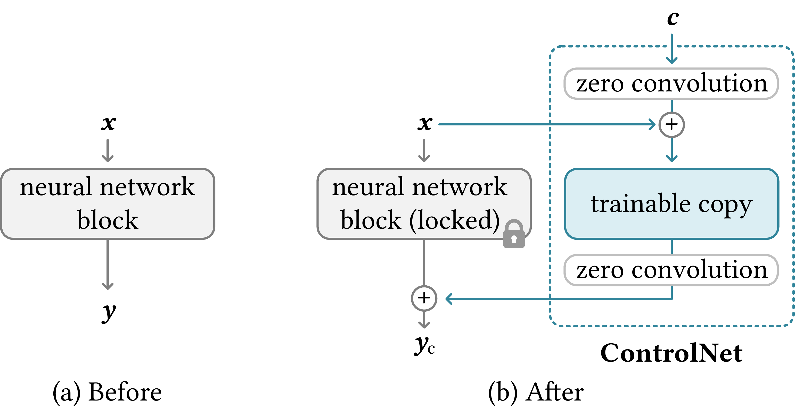
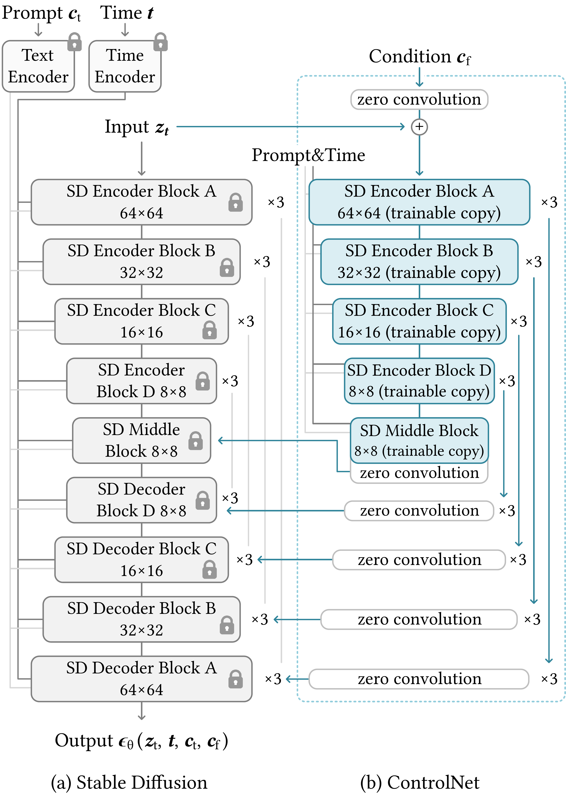
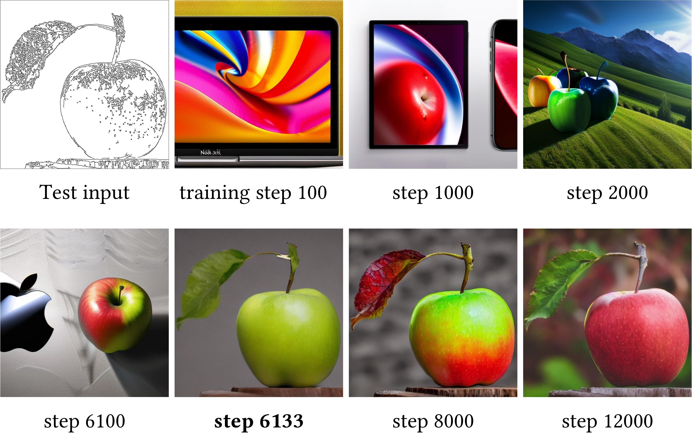
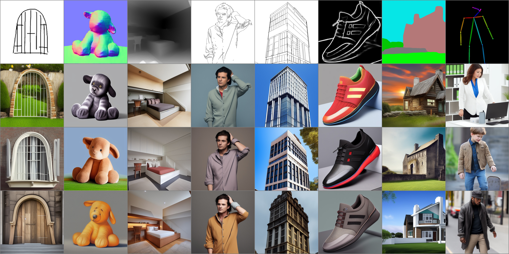

🎮 费曼一分钟（通俗速读）
大扩散模型（如 Stable Diffusion）只会听文字，难精确控构图、姿态、边缘。ControlNet = 锁住原 U-Net 权重 + 复制可训练支路，用 zero-init 1×1 卷积渐进注入条件，不破坏预训练能力。可训 Canny / depth / pose / seg 等；小数据集也稳；「sudden convergence」现象——几百步后 loss 突然下降、条件控制突然学会。
📄 原文 Figure 1：ControlNet 条件控制 Teaser（Canny / Pose 等）

Abstract
We present ControlNet, a neural network architecture to add spatially localized control signals to large, pretrained text-to-image diffusion models without damaging their original capabilities. ControlNet duplicates the weights of the U-Net encoder into a trainable copy and connects them via zero-initialized 1×1 convolutions ("zero convolutions").
Because the original weights are locked and the trainable copy uses zero initialization, the model can be trained on small datasets without harming the large diffusion model. ControlNet enables fine-grained control over structure, pose, edges, and more, while preserving the quality and diversity of the base model.
我们提出 ControlNet——一种神经网络架构，向大型预训练文生图扩散模型添加空间局部化控制信号，且不损害原有能力。ControlNet 将 U-Net 编码器权重复制为可训练副本，并通过 零初始化 1×1 卷积（zero convolution）连接。
原权重锁定、可训练副本零初始化，使模型可在小数据集上训练而不伤害大扩散模型。ControlNet 实现对结构、姿态、边缘等的细粒度控制，同时保留基座模型的质量与多样性。
段落功能
宣告「锁权重 + 可训练副本 + zero conv」三件套，承诺小数据可控微调且不损 SD 能力。
逻辑角色
论证链起点：问题（文本难精确控空间）→ 解法（ControlNet 旁路注入）→ 承诺（多条件、小数据、保质量）。
1. Introduction
Large text-to-image diffusion models like Stable Diffusion can generate high-quality images from text prompts, but lack precise spatial control — users cannot easily specify where objects appear, their pose, or edge structure.
Fine-tuning the entire model for each new control type is expensive and risks catastrophic forgetting. Adapter-based methods add limited capacity. Image-guided approaches (e.g., concatenating edge maps to input) often require retraining or degrade base model quality.
Stable Diffusion 等大型文生图扩散模型可从文本生成高质量图像，但缺乏精确空间控制——用户难以指定物体位置、姿态或边缘结构。
为每种新控制类型微调整模昂贵且易灾难性遗忘。Adapter 方法容量有限。图像引导方案（如拼接边缘图到输入）常需重训或损害基座质量。
段落功能
建立「SD 文本强 vs 空间控弱」反差；列举微调整模、adapter、输入拼接三类路线的局限。
We propose ControlNet: lock the pretrained U-Net, create a trainable duplicate of encoder + middle blocks, inject spatial conditions through zero convolutions. At training start, zero conv outputs are zero — ControlNet adds nothing, preserving pretrained behavior. Gradually it learns to inject condition without disrupting $\Theta$.
我们提出 ControlNet：锁定预训练 U-Net，复制编码器 + middle block 为可训练副本，经 zero conv 注入空间条件。训练初始 zero conv 输出为零——ControlNet 不改动原模型；随后渐进学会条件注入而不破坏 $\Theta$。
论证技巧
核心 insight：不是改原网络，而是旁路增量；zero init 保证 $t=0$ 时 $y_c = F(x;\Theta)$ 恒成立——数学上「无损启动」。
2. Related Work
Image-guided diffusion: PITI (pretrain + finetune on paired data), Sketch-Guided Diffusion, Taming Transformers — often require large paired datasets or full model finetuning.
Adapter / LoRA: add small trainable layers but may lack capacity for complex spatial conditions. GLIGEN boxes objects via gated attention. ControlNet differs by full encoder duplicate + zero conv skip connections to every decoder level.
图像引导扩散：PITI、Sketch-Guided Diffusion、Taming Transformers 等常需大规模配对数据或全模微调。
Adapter / LoRA：加小层但容量可能不足。GLIGEN 用门控注意力框物体。ControlNet 不同：完整编码器副本 + zero conv 跳连到各 decoder 层。
逻辑角色
为 Fig.5 对比埋伏笔——ControlNet 在相同 SD 骨干上优于 PITI / Sketch-Guided / Taming 的空间对齐与保真。
3. Method — ControlNet Block & SD Integration
Consider a neural network block with input feature map $x$ and output $y$:
$$y = \mathcal{F}(x;\,\Theta) \quad\text{(locked)}$$
To add spatial condition $c$, we introduce trainable $\Theta_c$ and zero convolutions $Z(\cdot;\,\Theta_{z})$:
$$y_c = \mathcal{F}\!\big(x + Z(c;\,\Theta_{z1});\,\Theta_c\big) + Z\!\Big(\mathcal{F}\!\big(x + Z(c;\,\Theta_{z1});\,\Theta_c\big);\,\Theta_{z2}\Big)$$
$\Theta$ is locked (no gradient). $Z$ is 1×1 conv with weights and biases initialized to zero — at step 0, $y_c = \mathcal{F}(x;\,\Theta)$ exactly.
设神经网络块输入特征 $x$、输出 $y$：
$$y = \mathcal{F}(x;\,\Theta) \quad\text{（锁定）}$$
为加入空间条件 $c$，引入可训练 $\Theta_c$ 与 zero conv $Z$：
$$y_c = \mathcal{F}\!\big(x + Z(c;\,\Theta_{z1});\,\Theta_c\big) + Z\!\Big(\mathcal{F}\!\big(x + Z(c;\,\Theta_{z1});\,\Theta_c\big);\,\Theta_{z2}\Big)$$
$\Theta$ 锁定；$Z$ 为权重/偏置全零初始化的 1×1 卷积——初始 $y_c = \mathcal{F}(x;\,\Theta)$ 恒成立。
Locked + Trainable Copy（自绘）
flowchart TB C["条件 c
Canny/pose/depth"] --> Z1["Z(·; Θ_z1)
zero conv"] X["特征 x"] --> LOCK["F(x; Θ)
🔒 locked"] X --> Z1 Z1 --> CN["F(·; Θ_c)
trainable copy"] CN --> Z2["Z(·; Θ_z2)
zero conv"] LOCK --> ADD["+"] Z2 --> ADD ADD --> YC["y_c → decoder skip"]
📄 原文 Figure 3：Locked Block + Trainable Copy + Zero Conv

Stable Diffusion integration: Lock entire SD U-Net $\epsilon_\theta$. Duplicate encoder blocks + middle block as ControlNet. Condition image $c$ (e.g., Canny edges) encoded by small conv stack, fed into ControlNet encoder mirroring SD encoder.
ControlNet outputs (one per encoder level + middle) connect to SD decoder skip connections via zero convs. SD decoder blocks receive: locked features + ControlNet residuals. Text conditioning via cross-attention unchanged.
SD 集成：锁定 SD U-Net $\epsilon_\theta$。将编码器块 + middle block复制为 ControlNet。条件图 $c$（如 Canny）经小卷积栈编码，送入镜像 SD 编码器的 ControlNet。
ControlNet 各层输出（每 encoder level + middle）经 zero conv 连到 SD decoder skip。Decoder 接收 locked 特征 + ControlNet 残差；文本 cross-attention 不变。
设计取舍
只复制 encoder + middle（非 decoder）——条件信息在压缩语义层注入，经 skip 影响各分辨率 decoder；比全 U-Net 复制参数少一半仍足够强。
📄 原文 Figure 2：U-Net + ControlNet 整体架构（MAIN）

Training: Standard diffusion objective — predict noise $\epsilon$ on latent $z_t$. Only ControlNet (+ condition encoder) trainable; SD locked. Can train on small datasets (e.g., fill50k ~50k Canny pairs). Observed sudden convergence: loss flat for many steps, then drops sharply ~300–3000 steps as condition control "clicks in".
训练：标准扩散目标——在 latent $z_t$ 上预测噪声 $\epsilon$。仅训 ControlNet（+ 条件编码器），SD 锁定。可在小数据集（如 fill50k 约 5 万 Canny 对）上训练。观察到突然收敛：loss 长期平坦后于约 300–3000 步陡降，条件控制「突然学会」。
逻辑角色
zero conv 使早期梯度主要更新 $\Theta_c$ 内部；待 $Z$ 权重偏离零后条件信号才有效注入——解释 sudden convergence 非 bug 而是设计必然。
📄 原文 Figure 4：Sudden Convergence 现象

Inference — CFG & Control Weight: Text uses classifier-free guidance (CFG) as in SD. Control strength scaled by weight $w_c$ on ControlNet residuals. CFG-RW (Classifier-Free Guidance with Resolution Weighting): when combining text CFG and control, apply resolution-dependent weighting so low-res structure does not overpower high-res detail.
Multi-condition: Multiple ControlNets run in parallel; outputs summed before injection. Each condition (Canny + depth + pose) has independent $w_c$. Enables compositional control without retraining merged model.
推理 — CFG 与控制权重：文本沿用 SD 的 classifier-free guidance（CFG）。控制强度由 ControlNet 残差权重 $w_c$ 缩放。CFG-RW（带分辨率加权的 CFG）：合并文本 CFG 与控制时，按分辨率加权，避免低分辨率结构压过高频细节。
多条件：多个 ControlNet 并行，输出求和后注入；Canny + depth + pose 各设 $w_c$，无需重训合并模型即可组合控制。
Multi-ControlNet（自绘）
flowchart LR
C1["Canny CN"] --> S["Σ w_i · residual_i"]
C2["Depth CN"] --> S
C3["Pose CN"] --> S
S --> DEC["SD Decoder skips"]
TXT["Text CFG"] --> DEC
DEC --> OUT["生成图像"]
💻 代码对照 — Locked Copy + Zero Conv
官方实现：github.com/lllyasviel/ControlNet · 核心在 cldm/cldm.py + ldm/modules/diffusionmodules/util.py。论文式 (3.1) 在工程里拆成三块：锁 SD 主干、可训 ControlNet 副本、zero conv 残差注入 decoder skip。
| 论文符号 | 代码位置 | 含义 |
|---|---|---|
| $\mathcal{F}(x;\Theta)$ locked | ControlledUnetModel.forward 内 with torch.no_grad(): | SD U-Net encoder + middle 冻结前向，$hs$ 存 skip |
| $\mathcal{F}(\cdot;\Theta_c)$ | ControlNet 的 input_blocks + middle_block | 镜像 SD encoder 结构，权重从 SD 复制后单独训练 |
| $Z(\cdot;\Theta_z)$ | make_zero_conv → zero_module(conv 1×1) | 每层输出经 1×1 conv，权重/偏置全零初始化 |
| 条件 $c$ 编码 | input_hint_block(hint) | Canny 等 hint 图 → 与 latent 同尺度特征，首层 h += guided_hint |
| $y_c$ 加回主路 | hs.pop() + control.pop() | ControlNet 各层 zero conv 输出栈，LIFO 注入 decoder concat |
① Zero Conv — 论文 $Z$ 的最小实现
不是特殊算子，就是普通 Conv/Linear，参数置零。训练 step 0 时任意输入 → 输出恒 0，保证旁路关闭。
对应论文：$Z$ 为 1×1 conv，权重/偏置 initial = 0 → $Z(c)=0$，故 $y_c = \mathcal{F}(x;\Theta)$。
② ControlNet Block — 伪代码 ↔ 论文式 (3.1)
论文在一个 block 内写 locked $\mathcal{F}$ + trainable copy + 两个 $Z$。仓库把「copy 支路」整段做成独立 ControlNet 模块；「locked $\mathcal{F}$」留在 ControlledUnetModel；连接靠每层 zero_convs 输出残差列表。
仓库等价写法（每层 encoder block 后挂一个 zero conv，输出进栈）：
input_hint_block 最后一层也是 zero_module(conv)——hint 通路同样 zero-init，避免条件图在 step 0 扰动 copy。
③ Locked SD U-Net — 主路冻结 + 残差注入
论文「lock $\Theta$」在代码里 = encoder/middle 包在 torch.no_grad()；decoder 仍跑 locked 权重，但 skip 来自 hs + control。
注意：decoder 在 no_grad 外——仍用 locked 权重前向，但梯度经 control 残差回传到 ControlNet；默认 sd_locked=True 时不更新 SD 参数。
④ 训练 glue — 只优化 ControlNet
⑤ 数据流一图（训练一步）
flowchart TB
subgraph LOCK["ControlledUnetModel 🔒 no_grad"]
X["x_noisy latent"] --> ENC["SD input_blocks → hs[]"]
ENC --> MID["middle_block → h"]
end
subgraph CN["ControlNet 可训 copy"]
HINT["hint 条件图 c"] --> HINTENC["input_hint_block"]
X --> COPY["镜像 input_blocks + middle"]
HINTENC --> COPY
COPY --> ZC["每层 zero_conv → outs[13]"]
end
ZC --> INJ["hs.pop()+control.pop() 注入 decoder skip"]
MID --> INJ
LOCK --> INJ
INJ --> DEC["output_blocks → ε̂"]
DEC --> LOSS["L = ‖ε − ε̂‖² 仅 CN 有梯度"]
⑥ 与论文差异（读代码时留意）
- Block 粒度：论文画「单 block 内 locked+copy+双 Z」；代码是整段 U-Net encoder 级镜像 + 每层一个
zero_conv，语义一致、粒度更粗。 - 条件注入：论文 $x + Z_1(c)$ 进 copy；代码用
input_hint_block编码后在第一个 copy block做h += guided_hint（hint 出口也是 zero conv）。 - 权重初始化：
tool_transfer_control.py从 SD checkpoint 复制 encoder 权重到 ControlNet——copy 的 $\Theta_c$ 起点 = 预训练 $\Theta$，不是随机。 - Sudden convergence：zero conv 使早期 $control \approx 0$；当
zero_module权重被梯度推离 0，条件信号突然进入 skip → 与 Fig.4 现象一致。
4. Experiments
We train ControlNet on multiple conditions: Canny edges, HED soft edges, depth (MiDaS), normal maps, semantic segmentation, human pose (OpenPose), lineart, anime lineart, scribbles. All use locked SD v1.5; condition-specific ControlNet trained separately on paired datasets.
Qualitative results show strong alignment between condition maps and generated structure while preserving SD photorealism and prompt following. Notably, ControlNet works with empty prompts — structure from condition alone drives generation.
在多种条件上训练 ControlNet：Canny、HED 软边缘、深度（MiDaS）、法线、语义分割、人体姿态（OpenPose）、线稿、动漫线稿、涂鸦等。均基于锁定 SD v1.5；每种条件单独训 ControlNet。
定性结果显示条件图与生成结构强对齐，同时保留 SD 真实感与 prompt 遵循。尤其可在空 prompt下仅靠条件结构生成。
| Condition | Detector / Source | Dataset scale |
|---|---|---|
| Canny | OpenCV Canny | fill50k (~50k) |
| Depth | MiDaS | ~3M LAION pairs |
| Pose | OpenPose | ~200k human pairs |
| Segmentation | Uniformer / ADE20K | ~164k |
- 论点↔证据：同一架构跨 9+ 条件类型复用，证明 locked-copy + zero conv 是通用配方而非 Canny 特化。
📄 原文 Figure 6：多种条件 + 空 Prompt 定性结果

Comparison to baselines: vs PITI, Sketch-Guided Diffusion, Taming Transformers on edge/pose-conditioned generation. ControlNet achieves better structure fidelity, fewer artifacts, and preserves base SD quality. User study favors ControlNet on controllability and aesthetic quality.
Ablations: Removing zero conv (random init) causes training instability and damages pretrained model. Training without locked weights leads to catastrophic forgetting of text capability.
基线对比：与 PITI、Sketch-Guided Diffusion、Taming Transformers 在边缘/姿态条件生成上对比。ControlNet 结构保真更好、伪影更少、保留 SD 质量；用户研究在可控性与美学上偏好 ControlNet。
消融：去掉 zero conv（随机初始化）训练不稳定且损害预训练；不锁权重则文本能力灾难性遗忘。
论证技巧
两个消融分别验证 zero conv（无损启动）与 locked $\Theta$（保文本）——缺一不可，支撑设计三件套。
📄 原文 Figure 5：与 PITI / Sketch-Guided / Taming 对比

5. Conclusion
We presented ControlNet, enabling additive fine-grained spatial control for large pretrained diffusion models. By locking original weights, duplicating encoder blocks, and connecting via zero convolutions, we train on small datasets without damaging the base model.
ControlNet supports diverse conditions, multi-control composition, and integrates seamlessly with Stable Diffusion. The approach has become a standard tool in open-source generative AI pipelines (ComfyUI, A1111, etc.).
我们提出 ControlNet，为大型预训练扩散模型提供可叠加的细粒度空间控制。锁定原权重、复制编码器块、经 zero conv 连接，可在小数据集训练而不损害基座。
ControlNet 支持多样条件、多控制组合，与 Stable Diffusion 无缝集成，已成为开源生成 AI 流水线（ComfyUI、A1111 等）的标准工具。
逻辑角色
论证链终点——从「文本难控空间」到「即插即用多条件控制」闭环；强调工程影响力（开源生态采纳）。
符号速查表
| 符号 | 含义 |
|---|---|
| $x,\; y$ | U-Net 块输入 / 输出特征图 |
| $\mathcal{F}(\cdot;\,\Theta)$ | 预训练 locked 网络块（SD 原权重，无梯度） |
| $\mathcal{F}(\cdot;\,\Theta_c)$ | ControlNet 可训练副本（encoder + middle 镜像） |
| $c$ | 空间条件图（Canny / depth / pose / seg 等） |
| $Z(\cdot;\,\Theta_z)$ | Zero convolution：1×1 conv，权重/偏置初始化为 0 |
| $y_c$ | 注入条件后的块输出（式 3.1 简化形式） |
| $\epsilon_\theta$ | SD U-Net 噪声预测网络（整体锁定） |
| $z_t$ | 扩散 timestep $t$ 的 latent 噪声状态 |
| $w_c$ | 推理时 ControlNet 残差控制权重 |
| CFG / CFG-RW | Classifier-Free Guidance；带分辨率加权的 CFG 组合策略 |
论证结构总览
→ 论点（锁 $\Theta$ + 可训练副本 $\Theta_c$ + zero conv 渐进注入 → 不破坏预训练）
→ 方法（ControlNet block 式；挂载 SD encoder + middle；训练仅更新 CN；推理 CFG + $w_c$ + 多 CN 求和）
→ 证据（9+ 条件类型；小数据 fill50k；sudden convergence Fig.4；vs PITI/Sketch/Taming Fig.5；空 prompt Fig.6）
→ 消融（无 zero conv → 不稳定；不锁 → 遗忘文本）
→ 结论（开源生态标准插件，ICCV 2023）
核心主张（一句话）
通过锁定预训练 U-Net 并复制可训练编码器支路，以零初始化 1×1 卷积渐进注入空间条件，ControlNet 在不损害大扩散模型原有能力的前提下实现多样、可组合、小数据可训的细粒度空间控制。
来源：arXiv:2302.05543 · github.com/lllyasviel/ControlNet · 生成工具：paper-logic-reading skill（三栏版）
🧩 结构化十问（AI 解构）
让 AI 当助教，从十个角度提取论文骨架。
Q1 · 论文试图解决什么问题？
Q2 · 这是否是一个新问题？
Q3 · 要验证什么科学假设？
Q4 · 有哪些相关研究？如何归类？
- 图像引导扩散：PITI、Sketch-Guided Diffusion、Taming Transformers
- 轻量微调：LoRA、Adapter、Hypernetwork
- 空间条件：GLIGEN（bounding box）、Composer
- 基座：Stable Diffusion / LDM
Q5 · 解决方案的关键是什么？
Q6 · 实验是如何设计的？
Q7 · 用什么数据集评估？代码开源吗？
Q8 · 实验结果是否很好支持了假设？
Q9 · 这篇论文到底有什么贡献？
Q10 · 下一步可以做什么？
🔬 深挖追问
第一性原理 · 本质
文生图扩散模型的「控制接口」原本只有文本 cross-attention——全局、语义级。空间结构（边缘/深度/姿态）需要像素/特征级注入。ControlNet 的本质是：把预训练 U-Net 当作固定先验，另开一条可学习「结构通道」，用 zero init 保证通道初始关闭，渐进打开——类似在已调好的收音机上并联一个可控均衡器，而非重新设计整机。
第一性原理 · Zero Conv 为何有效
随机初始化旁路会在 step 0 就扰动 $\mathcal{F}(x;\Theta)$ 的输出，破坏预训练流形。Zero conv 使 $\partial y_c / \partial c = 0$ 在初始，梯度先更新 $\Theta_c$ 内部表示，待 $Z$ 权重非零后条件才泄漏——这解释了突然收敛：不是线性学习，而是阈值式「通道打开」。
第一性原理 · 与 LoRA 对比
LoRA 低秩分解 $\Delta W = BA$，参数量小但表达能力受限。ControlNet 复制完整 encoder（~50% U-Net 参数），容量大，适合复杂空间条件；代价是每条件一套权重。二者可叠加：LoRA 改风格，ControlNet 控结构。
批判性思维 · 我们还没问的根本问题（盲区）
- 条件检测器依赖：Canny/depth/pose 质量上限由 OpenCV/MiDaS/OpenPose 决定——错误条件图会强制生成错误结构。
- 多 CN 求和：线性叠加缺乏理论保证，可能出现条件冲突（pose 与 depth 不一致）时的不可预测行为。
- Sudden convergence 风险：训练需监控临界步，过早停止可能永远学不会；不同条件临界步差异大。
- 文本-控制竞争：$w_c$ 过大时结构压过 prompt 语义；CFG-RW 缓解但超参敏感，无自动调度。
- 版权与滥用：pose/edge 控制降低仿冒门槛；论文未提供技术层缓解。
- 新骨干迁移：SDXL/Flux/DiT 架构变化（无 U-Net skip）需重新设计挂载点——ControlNet 并非 architecture-agnostic。